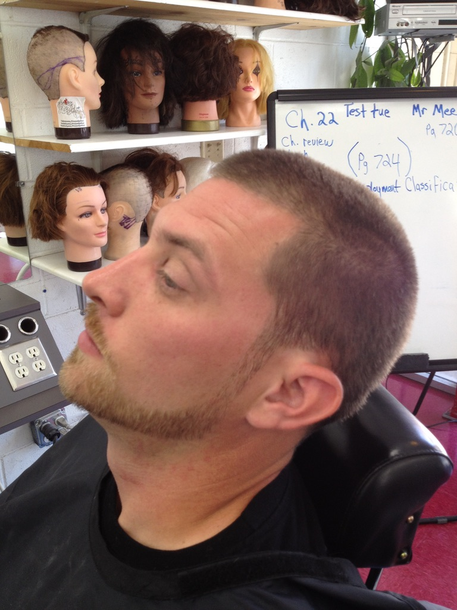
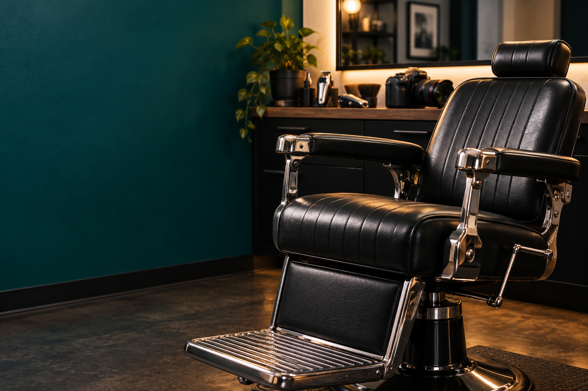

Classic Haircut
From $35
Scissor or clipper cut with a neckline cleanup.
PRIMAL STUDIO / BARBERING
A thoughtful look at shape, texture, and personal expression.
Plan a Barbering Inquiry View Barbering Prices
My background in barbering shapes the way I look at personal style. The outline of a haircut, the movement of the hair, and the way a style frames the face all contribute to someone’s appearance. I am interested in how those details work together and how a haircut can become part of a person’s everyday identity.
I look at how the shape holds from the side, where the taper begins, and how much length to leave for curls or waves. Those choices depend on how the client wants to wear the cut between visits.
Move the slider to compare two AI-generated style concepts. The curly finish keeps more height on top. The wavy finish emphasizes the taper.
BARBERING MENU
Draft starting prices for the class project. Final pricing depends on the service and the time it takes.

From $35
Scissor or clipper cut with a neckline cleanup.
From $45
Blended sides with a shaped top and clean neckline.
From $20
Shape the beard and define the cheek and neckline.
From $55
A haircut and beard shaping in one appointment.
If you are interested in barbering, begin by describing your current look and what you want to change. Reference images can help explain a direction, but the conversation should also consider how you wear your hair day to day. Let me know whether you are thinking about a different shape, more definition, or a look that connects with a portrait session.
Photography and barbering can support the same personal story. A haircut changes the way someone presents themselves, and a portrait can capture that change. This connection is the central idea behind Primal Studio and the reason both practices share one portfolio.
Availability and any service details will be discussed directly. This website does not confirm appointments.
See Inquiry Guide